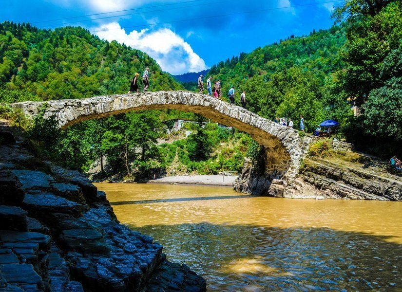
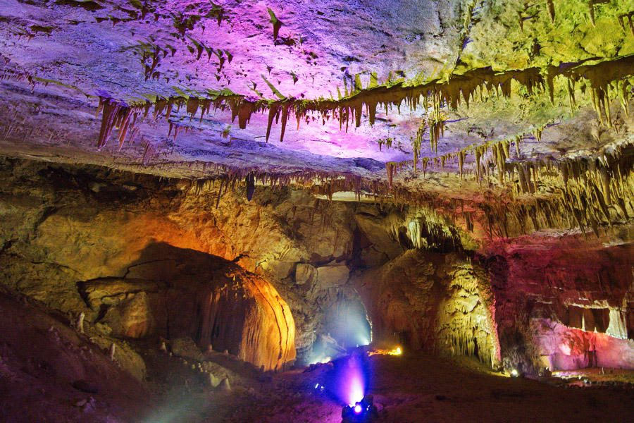

Махунцети: водопад и мост
Лучший первый выезд: дёшево, близко, без организации. Маршрутка №77 идёт около 40 минут и стоит примерно 2 GEL с человека.

Что там
Водопад высотой около двадцати метров, в который можно залезть, и старинный каменный мост через горную реку в километре от него. Вдоль дороги - шашлычные, прилавки с чачей и чурчхелой, кафе прямо над водой.
Половина дня, если не задерживаться. Целый - если обедать и купаться.
Зиплайн через ущелье
Рядом с водопадом натянут трос длиной 512 метров на высоте 118 метров над рекой. В гиде для родителей этот пункт стоял с пометкой «не для нас» - здесь он как раз к месту.
Нацпарк Мтирала
Самое влажное место Грузии и, соответственно, самый настоящий субтропический лес в получасе от моря. Вход бесплатный.
Дальний маршрут
Тропа к водопаду и озеру - около четырёх километров подъёма по лесу. В прошлых гидах её вычёркивали как слишком тяжёлую; для вас это основная причина сюда ехать. Наверху водопад с озерцом, в котором купаются.
уточнить Последний участок дороги грунтовый - после сильных ливней туда лучше не соваться.
Как добраться
Прямого автобуса в парк нет: обычно едут до села Чаквисткали, дальше договариваются с местными, либо берут машину на день. уточнить Это единственное направление из списка, где без торга не обойтись - уточните варианты на месте, в том числе через хозяев жилья.
У входа - ручная канатная переправа через реку за пару лари. Аттракцион сам по себе.
Кутаиси и пещеры Имерети
Самый дальний и самый дорогой выезд: 145-185 км в одну сторону, два с половиной-три часа дороги. Полный день - это 10-12 часов от выхода до возвращения.

Пещера Прометея
Маршрут около полутора километров под землёй, 45-60 минут, постоянные +14 °C - берите кофту. Ступеней много, но идут они в основном вниз. В конце можно доплатить за лодку по подземной реке (около 20-30 GEL) - ходит не всегда. Пол мокрый и скользкий.
Каньон Мартвили
Бирюзовая река в известняковом каньоне, круговая тропа 700 метров, два моста. Лодка на 15-20 минут по самому каньону - за отдельные деньги. уточнить Стеклянный мост закрывают в дождь, лодки не ходят при высокой воде.
Каньон Окаце - если хочется нагрузки
Подвесная тропа длиной 780 метров над обрывом, металлические лестницы, перепад высот около 130 метров, обратно - постоянный подъём. Официально позиционируется как маршрут для любителей экстрима. Ровно тот пункт, который в родительском гиде был вычеркнут первым.
Как ехать
Своим ходом: маршрутки и поезда на Кутаиси ходят регулярно, дальше по объектам - местный транспорт или такси, что съедает время. Организованная поездка из Батуми выходит от 55 до 95 долларов с человека, машина с водителем на весь день - около 200-220 GEL. уточнить Цены августовские.
Считайте честно: если брать два объекта и ехать самостоятельно, день получится длинным и не самым дешёвым.
Хуло и канатка над ущельем
88 километров вглубь Аджарии, около двух часов по асфальту. В горах на пять-семь градусов свежее, чем на побережье.
Канатка Хуло - Таго
Кабинка идёт над ущельем на высоте около 350 метров, полтора километра без единой промежуточной опоры. Кабинка маленькая и совсем не новая - это аттракцион «на смелость», а не транспорт для туристов. Стоит копейки.
По пути в Хуло - монастырь Схалта XIII века.
Как добраться
Маршрутка до Хуло стоит около 10 GEL с человека и идёт примерно два часа. Уезжать надо рано, возвращаться засветло: вечерних рейсов мало. уточнить Уточните расписание обратных маршруток до того, как поедете.
Дальше Хуло, на перевал Годердзи, идёт грунтовка - туда без машины делать нечего.
Винодельни Аджарии
Сентябрь - ртвели, сбор винограда. Формально это лучшее время, но без машины винный день собирается сложнее прочих.
Шато Ивери
Село Варджаниси по дороге на Кеду. Дегустация четырёх вин с закусочной доской: 50 GEL с человека, если вас от двух до десяти (одному - 100). Виноградники на высоте 500 метров, местные сорта цоликоури, чхавери, сацури. Тел. +995 599 71 62 63, chateauiveri.ge.
уточнить Часов работы на сайте нет - только по звонку.
Как добираться
Маршрутка на Кеду стоит около 3 GEL, но винодельни стоят в стороне от трассы - последний участок придётся идти или ловить попутку. Проще договориться о трансфере с самой винодельней при бронировании.
Дешёвая альтернатива без всякой логистики - винная лавка в городе: литр домашнего на розлив стоит 8-9 GEL.